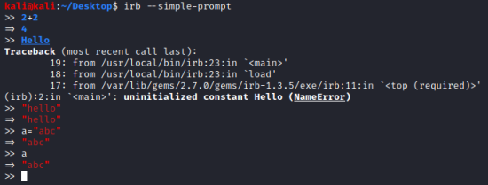

How execute Ruby
There are different ways we can use Ruby, depending on our needs:
• Execute Ruby from a file
◇ Windows
Hello.rb
echo puts "Hello World!" > hello.rb
type hello.rb
ruby hello.rb
◇ Linux
echo 'puts "Hello World!"' > hello.rb
cat hello.rb
ruby hello.rb
• Execute Ruby from the Command Line
◇ Windows/Linux
ruby -e 'puts "Hello World!"'
• Interactive Ruby Execution
We can run interactive Ruby programs using the irb tool
◇ Windows/Linux
 An alternative interactive environment (like irb) is pry. It has many interesting features such as syntax highlighting.
gem install pry
pry --simple-prompt